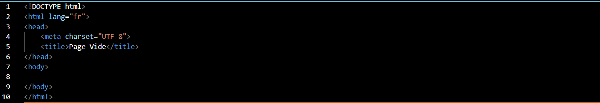
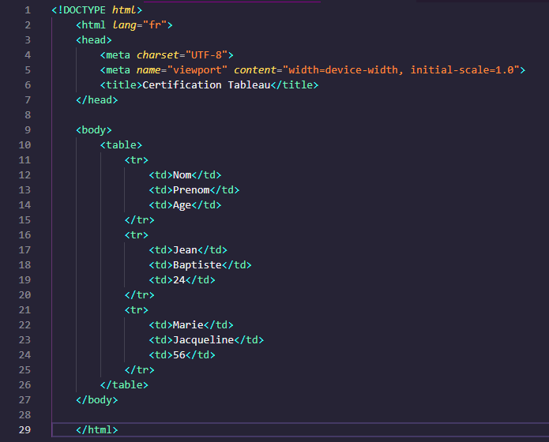

Organiser les éléments d’une page web grâce au CSS
Modifier l'agencement d'une page HTML avec CSS
Intégrer des formules dans une page web
Adapter une page pour les petites résolutions en CSS
Prendre du savoir et du savoir-faire en liaison avec ma formation en BTS SIO
Me servir lors de mon stage
Compétences qui me serviront dans mon futur professionnel
Un editeur de code : Visual Studio Code (VsCode)
Un navigateur web
La structure d'une page
Pour qu’une page HTML soit déclarée valide, elle doit obligatoirement comporter certains éléments et suivre un schéma précis. Une page non valide ne sera pas comprise par le navigateur qui va alors potentiellement mal l’afficher voire dans certains cas ne pas l’afficher du tout. De plus, une page non valide sera également mal analysée par les moteurs de recherche et ces mêmes moteurs de recherche risquent donc de ne pas la valoriser, c’est-à-dire de ne pas la proposer aux utilisateurs recherchant une information que votre page contient. Posséder des pages non valides risque d’impacter négativement le référencement de ces pages et de votre site en général dans les moteurs de recherche.

Les Tableaux
Les tableaux vous permettent de retrouver rapidement et facilement des valeurs au croisement
entre différents types de données, par exemple : une personne et son âge. Les tableaux
permettent d'être insèrer avec la balise HTML < table > et se définit ligne par ligne
avec < tr > . Chaque ligne comporte des cellules < td > (cellules normales) ou < th >
(cellules d'en-tête). On peut ajouter une bordure aux cellules du tableau HTML
avec la propriété CSS border.

Le CSS Grid
Le CSS Grid vous permet de créer des mises en page complexes en définissant des lignes et des colonnes
dans un conteneur. Il est utile pour organiser des éléments de manière plus flexible et structurée.
Pour utiliser CSS Grid, il suffit de définir un conteneur avec la propriété display: grid;
et de spécifier le nombre de lignes et de colonnes avec les propriétés grid-template-rows et
grid-template-columns. Chaque élément enfant du conteneur peut être placé à l'intersection
des lignes et des colonnes à l'aide des propriétés grid-row et grid-column.
Il est également possible de créer des espaces entre les éléments en utilisant la propriété grid-gap.